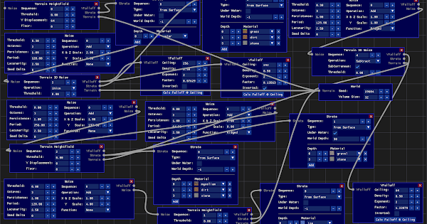
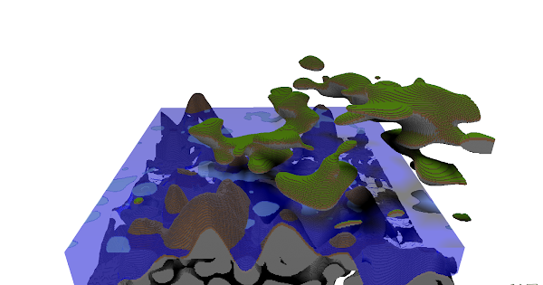
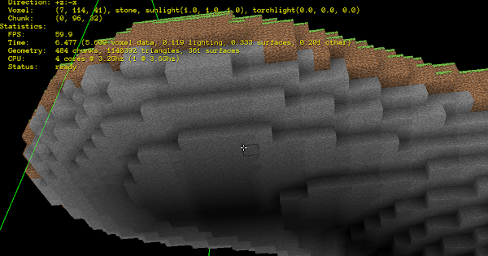
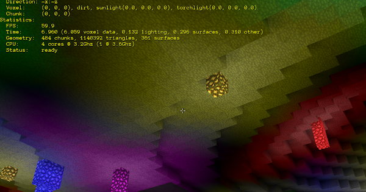
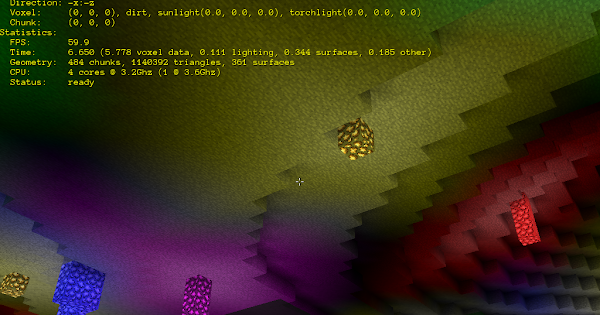
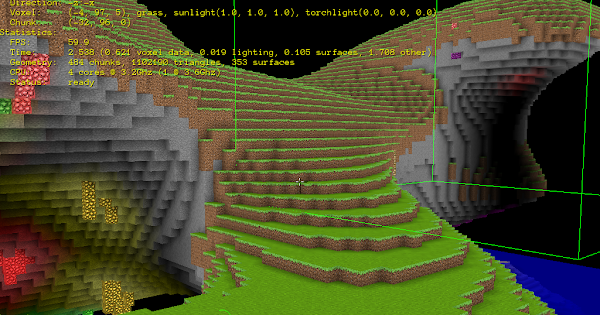
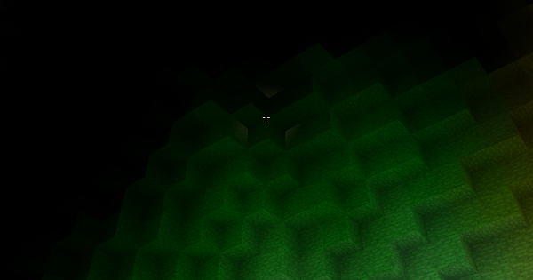
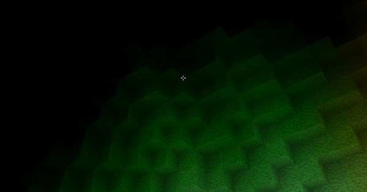

Teknologicus
Here’s a test run of something I’m working on that uses Urho3D, Polyvox and OpenSimplexNoise:
Here’s a test run of something I’m working on that uses Urho3D, Polyvox and OpenSimplexNoise:

That looks pretty cool already!
Also, welcome to the forums. 

I implemented my own light-weight voxel volume and cube voxel surface generator classes. I also switched to FastNoise SIMD. This version is using a texture atlas and has some related mipmap issues I need to fix.
Fixed issue with mipmaps and texture altas. Enabled Urho3D shadows again.
Generation of a 384 x 256 x 384 voxel world in about 9 seconds. This is using my own voxel volume and cubic voxel surface code, open_simplex_noise (3D) and C++11’s std::thread (std::mutex) to achieve this performance on an Intel (quad) Core i5-6500 CPU @ 3.20GHz. Video card is a GeForce GTX 560.
P.S. Project was in debug build. If I switch to release build, FastNoiseSIMD (simplex) and push the thread count higher, I can get it to generate in about 2 seconds.
Awesome world generation performance improvement:

this looks great! Are you using polyvox?
Thank you. I started the project using Polyvox, but then wrote my own C++ code to replace the Polyvox functionality I was using.
Even though I’m as anti-voxel as you can get (long live surface walkers!), this is nice to look at - you do a great job with presentation in these videos, especially the most recent one where you hesitate before moving in on the detail.
Nice work.
I’ve added a user interface to adjust various world generation parameters. Here are some screenshots. In each, I’ve re-selected the field (parameter) which was just changed prior to clicking “Apply” to make it easier to see what was changed. I revert each change before changing the next field.


I very much improved how multi-threading is handled, added more world generation parameters as well as heightfield support. A lot of code clean up and abstraction to handle different procedural terrain generators which each have their output combined together to generate a single world (in chunks). Todo: Heightfield should have its own set of world generation parameters. Add trees, water, caves, ores, other rock types, world traversal chunk paging, player, mining, additional lighting system for darkness in underground areas, etc.
I became curious how many triangles a second these multi-threaded examples are generating to create the cubic voxel surface chunks (in parallel). It’s about one million triangles a second. The vast majority of the performance hit is in the noise functions which are counted in this whole generation process.
Have you considered applying marching tetrahedra - or something similar - to this?
It might give your project an even more unique look (which might exactly not be what you’re aiming for) while maintaining the flexibility of voxels.
No, I haven’t considered that. Interesting idea! Thank you. I may give that a try. My only concern is how difficult it may be to get the texture mapping right with geometry generated by the marching tetrahdra algorithm.

A triplanar shader would probably be the way to go if you went with one of the marching algos. Use a texture array, and store the blend factors for terrain type in the vertex color. You could even store more blend factors in the texture coordinate, for more terrain variety.
I like the ice. If you’re sticking with cubes, it might be interesting to combine it with this:
Cubic planets could have square orbits around a central cubic star.
Btw, wouldn’t you rather have your own thread by now? I could move some messages, if you like.
Interesting idea! I will probably just go the Minecraft’ish route with euclidean-space world and dynamic chunk loading/unloading and biomes interpolated from world types created via the node graph definitions. I have quite a bit of the infrastructure in place for the chunk loading/unloading, I just need to write the world controller that handles that and more.
Feel free to move some/any messages to the this thread: Urho3D cubic voxel surfaces 
I used to have a Minecraft server with Bucket plugins that had an economy system. It had a store where players could buy and sell items. The world was locked down (no removing blocks or placing them and griefing was next to impossible, etc.) except for properties that could be purchased, owned and modified by said owner. It also had owner locked chests for item security. It had a ton of other fun Bucket plugins too. It was back in the days where Minecraft and Bucket updates would break the plugins for a while. I would have just stuck with what version worked, but the players kept updating their Minecraft clients (without backing up the old client) relentlessly and then would be unable to play on the server. Eventually it was too hard to update because the mission critical Bucket plugins I was using would not get updated to support newer versions of Bucket and I could not find alternative Bucket plugins.
So with what I’m working on, I would like to create something Minecraft’ish with a plugin system that uses Lua to allow for many cool things including something like my beloved Minecraft server which died an untimely death.
At some point I would also like to give back to the Urho3D community by open sourcing (MIT license) much of what I’m doing. If the project eventually goes no where or I lose interest in it, I will open source my code. If I can make a game and figure out a business model for it as I make it, I will open source at a later date after the game has been released.
P.S. Yes, I know of Minetest and MineClone2. I guess I still want to reinvent the wheel differently. 
Glowstones as a light sources test.
Tweaked light falloff distance and lights of different colors now blend together.

Pretty clear that culling is not a thing for you just yet, but if you want this to run on low end devices, which I love, you will need to consider culling.
This was “glowstone vomit everywhere” to test the lighting, so it is a worst case scenario.
The scene has an octree:
scene_=new Scene(context_);
scene_->CreateComponent<Octree>();
and in my understanding that does some culling via Urho3D. I still haven’t implemented the paging system which will also allow for customized view distance and that will improve things for lower end devices.
What if glowstone came in other colors?!?!?
Implemented lighting with mock ambient occlusion. Screenshots are with mock ambient occlusion first off, then on.
P.S. It’s interesting to note that there is hardly any impact on lighting generation time to do this! In case anyone wonders how I implemented this, I did it like explained here: https://blokworld.forumotion.co.uk/t6-lighting-technique
Re: Lighting technique
by Slaihne on Tue Mar 22, 2011 8:01 am:
…
Then when i am generating the vertices for my mesh i refer to the light values and average the 4 blocks in a plane directly touching the vertex (with the vertex in the centre). Note i average all the blocks, even solid to light ones. These zero light blocks pull the average down and give me the mock Ambient Occlusion in interior corners. This process also gives me smooth lighting rather than blocky.
…
Another two screenshots showing what a huge difference mock ambient occlusion lighting (2nd image) does for visual quality:
I think you might want to tune it down a bit, though.
…and/or add some distance attenuation (less effect further away).
This is 70% of the ambient occlusion:
Agreed, it would definitely look better tuned down. I think if I weight light values directly in front of the voxel faces higher and weight the face surrounding light values less in the average calculation I can achieve that. I’ll have to give the distance attenuation some contemplation, but maybe a very faint gray fog would do the trick or a shader.
Update: Tuned down mock ambient occlusion lighting/shadowing by giving light value which cube side faces higher weight relative to the other surrounding light/shadow values has the unwanted side-effect of lights not blending as well if tuned down too much. Distance attenuation would be advantageous with respect to this finding.
Giving the light/shadow value which cube side faces three times the weight of the surrounding light/shadow values in the averaging yields acceptable results both in terms of what distant terrain looks like as well as light blending.
Chunk paging test. It has some bugs to fix, but it works!
Chunk paging bug fixes and performance improvements:
[Updated]
Smoother paging and fixed some inconsistencies in paging behavior. Generation times, triangle counts and surface counts are being displayed (at top of video) now with paging.
Added property which allows different underwater strata vs above water strata. Added strata support at given world height/altitude in addition to previous from-surface-depth strata. Added Terrain 3D Noise “subterranean” property on subtractive Terrain 3D Noise to prevent strata layers in caves.
[Uploaded screenshots to Google Photos and put links here instead to save space on forum storage]


Chipping out blocks and surface update test. Lighting not updating yet…
This demo video shows sunlight updating when blocks are chipped out. (Lighting update when blocks are chipped out is still not working correctly across chunk boundaries. I’ll post another video for the curious once that’s working correctly.)
Dynamic flood fill lighting is now working across chunks. Here’s a demo video:
Y-axis sunlight propagation demo video:
Smooth movement with automatic jumping over terrain:
Sped up light transition from day to night and back to day. It’s a bit of a performance killer sped up in that all surfaces (not chunk voxel data nor chunk voxel light buffers) have to be regenerated each time the light level reaches the threshold of update. The glowing things at night are multicolored glowstones.
P.S. I added an optimization so it will not try to regenerate surfaces for chunks known not to have surfaces and to not try to regenerate surfaces for chunks known not to have sunlight on light transitions. (I already have a known hidden voxel bypassing mechanism in there with surface generation from back when I implemented paging.) The optimization gained me about 0.02 seconds in performance across each light transition. Then I got to thinking about bypassing unnecessary computation on one or two core CPUs is a bigger deal than on four or more core CPUs with how I’m multi-threading the surface generation (in addition to multi-threading chunk voxel data generation during world generation and paging)… With only one core used and said optimizations, I gain about 0.1 seconds in performance across each light transition, so it’s worth it.
Looking better and better!
Are you planning boulders and big procedural stationary organisms (like trees, fungi and lily pads) as well? Could make for some very interesting scenery, seeing what you’ve already done with the terrain.
I’m definitely planning on implementing trees, fungi, lily pads, boulders, rocks, etc.! Item drops (from chipped out blocks) are next on the to-do list. Inventory will follow item drops. And then non-cube shaped things (grass, saplings, flowers, doors, stairs, panes of glass, etc.). Trees and fungi will be implemented via a multi-block prefab mechanism. (I still need to wrap my head around how that can work with trees that grow bigger with time like the oak trees in Minecraft do.) Prefabs will be roughly equivalent to Minecraft’s Bucket/Spigot’s WorldEdit plugin schematics. I’m going to write a in-game block chiseler for creating things like stairs, doors, rocks as one or more block prefabs made of tiny blocks. So much cool stuff beyond vanilla Minecraft to implement!
P.S. Biomes are also planned so different world terrain types defined via the graph node schematics can seamlessly mesh together in an organic looking way.
I’m thinking that if you combine the techniques applied for creating the terrain, with some additional nodes for radial symmetry (fungi), branching (trees) and something metaballlike (boulders) this could result in a richer variation that could be made to blend into the terrain very nicely… with gnarly roots 'n stuff.
This could - in turn - form the basis of your procedural buildings. 
Each could be a layer that is processed after the other. Terrain > Boulders > Buildings > Trees > Fungi
But I am not familiar with the “schematics” you mentioned.
For the growing of trees you might consider creating some kind of biased 3D cellular automaton.
Debugging corner offset collision detection issue with the help of vector math visualization to get dot product calculations right. Math is cool!
Item drops (using BillboardSet) and inventory dock (Sprites).
P.S. Those green lines are (crosshair) targeted chunk display for debugging purposes.
World fill from player spawn point:
Multi-threaded light propagation and smoother multi-threading:
I’ve been working on my cubic voxel surfaces engine with Urho3D again. Light generation (via voxel flood fill and vertex colors) is fully multi-threaded now. Lighting now has consistency (before and after) across regeneration of changed surfaces as well as not having artifacts with how I was regenerating lights before. More improvements to keeping main thread running smoothly during paging-in of new chunks and world updates. (The video recording doesn’t do that smoothness justice.) I’ve also improved world generation and update performance a little.
The terrain node graphs which describe world terrain are stored in YAML files. I was using Yaml-CPP for that, but it has all kinds of issues when compiled with / used with GCC-10. (I also don’t like using C++ exceptions for performance reasons which is something Yaml-CPP forced me to enable in my project.) I’ve had to scrap using Yaml-CPP and write my own C++ wrapper (LibYamlPlusPlus) around LibYaml to get the YAML related code working again. I may release LibYamlPlusPlus open source under the unrestrictive MIT license when it’s more complete if it would be useful to others.
This video is with visual debugging on, so that’s why there are lines on chunk edges.
https://youtu.be/JV53xdZv2OY
Have you considered using a node graph to create passing clouds?
No, I haven’t thought of a cloud node graph type. Interesting idea with many possibilities! I’d definitely like to have (cubic or smoothed with marching cubes) voxel surface clouds in worlds skies and that would be an awesome way to define their generation. Animation of clouds could be done with temporally generating surfaces from 3D slices of 4D noise. Thank you for the idea.
Cloud voxels could also have a varying density going from fully transparent to dark thunder. Beyond a certain point it might have a chance of releasing rain, reducing it’s density. And thunder voxels could have cellular automaton flashes moving through them, that glow like the gem blocks, occasionally striking down to the ground (when grid-aligned?). I recently recorded a surprisingly stationary and local thunderstorm, if you’d like some reference material. 
I think the link should be http, not https (I just get a certificate error with the latter)
http://weergeencookies.nl/
@Modanung All very cool ideas I’d like to implement! I still need to implement cellular automata tree generation defined by graph nodes too.
I noticed weighted average ambient occlusion lighting has artifacts. If I don’t weight the light value three times higher for block faces over adjacent light values in the average, the ambient occlusion shadows look too dark in sunlit areas. Unfortunately this causes noticeable artifacting (banding and blockiness) in lower light level areas.

and fixed or improved:
Issue (light blockiness) in another area:

and fixed:

and outside sunlit area still looks as it should with fix:

What I’ve done to fix this is to lower the higher weighting of block face light values in lower light levels areas when averaging.
P.S. I also fixed light bleeding through at edges adjacent to light emitting hidden blocks.
Before (see yellow light bleeding through near crosshair) :

After:

Off topic to Urh3D:
I’ve got load and save of chunks working to/from region files (x, y, z mapped blobs of compressed voxel data with intelligent voxel-id/name mapping to avoid any id debacle). I use run-length encoding (RLE) then zlib to deflate voxel-id/naming plus RLE chunk data. The reason I do RLE pass prior to zlib deflate is that it improves zlib’s compression ratio and zlib’s runtime time to deflate. Voxel data compresses well with RLE and does so very fast. Zlib’s algorithms (https://www.euccas.me/zlib/) are somewhat computationally intensive with sliding-windows, LZ77 and huffman coding, so the less data zlib has to crunch the faster it runs.
I wrote the mapped data blobs file code with abstraction in such a way that it can be re-used for save data of homogeneous or non-homogeneous data with any programmer defined mapping mechanism while also taking into account endianness of both mapping and load/save data.
Inventory interface system work in progress:

Random comment: don’t animate incorrect drag&drop this way.
It doesn’t add anything new to the game and is outright annoying.
If you must keep this animation, make it as quick as time of human’s reaction (duration less than 100-200 ms).
If player can move mouse into inventory and click again while animation is playing, then the animation is too slow.
Or better, don’t even let player finish drag&drop if destination is invalid.
Interior trees leaf blocks without front side surface culling:
[Edit: I just realized I goofed on labeling timer results. Those are seconds not milliseconds (ms). My apologies to all.]
For fun I’ve gone down the rabbit hole of implementing a POD flat (contiguous memory) set/map associative containers for performance and out of curiosity. Anyone who has looked into better CPU performance by potential avoidance of cache misses through memory locality knows std::set and std::map “swiss cheese” heap memory – which is not cache friendly.
My red black tree node implementation uses (C++ type templated) indices instead of pointers. Being that the nodes are stored in contiguous memory, indices work for parent, left and right child indirection instead of pointers. This also means that the red black tree nodes have a smaller memory footprint using indices (vs pointers on a 64bit platform) which can improve cache performance for set/map containers of smallish data types.
Test data set is 524288 sequential int values which are shuffled (with the same random number generator seed each run for both std::set and PODFlatSet). Data set is shuffled before insert()'s, find()'s and erase()'s respectively to give the CPU’s L1, L2 and L3 caches a good thrashing. Shuffling of data set is not timed, just the 524288 operations of each respective type (insert()'s, find()'s, erase()'s). Code is compiled with g++ version 10.2.0 on Linux with “-std=c++17 -O3 -fno-exceptions” compiler flags.
Results:
data type: int
std::set::insert()'s: 0.239957 s
std::set::find()'s: 0.273016 s
std::set::erase()'s: 0.317514 s
data type: int
index type: uint32_t
initial container capacity in elements: 256 (PODFlatSet dynamically increases capacity as needed via realloc)
sizeof() for red black tree node type: 20 (counting struct padding)
PODFlatSet::insert()'s: 0.155473 s
PODFlatSet::find()'s: 0.176772 s
PODFlatSet::erase()'s: 0.234159 s
As you can see my POD flat set container outperforms std::set! My POD flat map container outperforms std::map too with about the same margins of gain.
Is a POD flat set/map container type something Urho3D could use as a feature?
P.S. I did look into EASTL’s flat set/map, but decided to implement my owner.
Did you compare EASTL with your own container? I’m curious how your container performs comparing to its counterpart.
I know that my opinion is somewhat biased, but I think it’s the opposite of right direction.
I personally wasted several weeks of my life trying to keep Urho Containers up-to-date to modern requirements. That’s why we ditched Urho Containers in favor of EASTL later in the fork.
True, I had to spend three days total fixing bugs in EASTL, which is still 4 times less than I spent on Urho Containers.
You can always keep your containers as independent open source project for everyone to use (including Urho users) and it would be great. Adding it to Urho would only increase maintenance scope of Urho itself. It would be justified if these containers are actually used in the engine and improve performance of the engine as a whole, which is not the case (yet?).
I think having Flat in the class names might be redundant.
@Eugene: Did you compare EASTL with your own container? I’m curious how your container performs comparing to its counterpart.
I haven’t performance tested my set/map containers yet against EASTL’s equivalent containers yet. I will do so later and report back my findings.
[Edit: I just realized I goofed on labeling timer results. Those are seconds not milliseconds (ms). My apologies to all.]
[Each test result is from a separately compiled and run executable so that there is no issue with one test skewing the results of another test if they were ran back to back all in the same program]
Here are the results which include STL, EASTL and my implementation (PODFlatSet) :
data type: int
date source size: 524288 (sequential values from a C type array shuffled with the same random seed used for each test run)
STL:
std::set::insert()'s 0.235801 s
std::set::find()'s 0.269055 s
std::set::erase()'s 0.313235 s
EASTL:
eastl::set::insert()'s 0.243850 s
eastl::set::find()'s 0.277503 s
eastl::set::erase()'s 0.342446 s
eastl::fixed_set::insert()'s 0.210423 s
eastl::fixed_set::find()'s 0.277634 s
eastl::fixed_set::erase()'s 0.320928 s
My implementation:
index type: uint32_t
initial capacity: 256
sizeof RedBlackTree Node: 20
PODFlatSet::insert()'s 0.146094 s
PODFlatSet::find()'s 0.174759 s
PODFlatSet::erase()'s 0.234269 s
eastl::fixed_hash_set::insert()'s 0.029931 s
eastl::fixed_hash_set::find()'s 0.013381 s
eastl::fixed_hash_set::erase()'s 0.031117 s
eastl::hash_set::insert()'s 0.087469 s
eastl::hash_set::find()'s 0.014796 s
eastl::hash_set::erase()'s 0.056828 s

Interesting numbers .
But how does it affects the overall performance ?
If your scene is running 200 FPS (5 ms per frame) you won’t even notice the gain .
You mentioned you are using realloc to increase container capacity , realloc might be an expensive operation on some platforms.
I am not trying to discourage you , this is a nice achievement
I think it will fit nicely in hard-real-time deterministic systems (which are also using their own deterministic memory allocators).
At that point you won’t notice any gain from anything.
At lower FPS would be the same observation , you won’t notice any gain .
60 FPS (16.6 ms per frame) , 0.1 ms will not be noticeable
Which is why that’s not how containers are profiled. ~30% faster seems significant to me.
I am not trying to show off
If you will google my name (you will have to find it first)
You will find some registered patents related to Android optimizations on my name , I actually made some money in the past .
Yes 30% increase in this specific scenario is significant but in relation to the overall performance it won’t be noticeable
That of course depends on how many containers you’re using. Higher performance means it will take more containers for it to cause a drop in FPS.
It’s like saying it doesn’t matter how much faster you draw a single triangle, because it’s just one triangle and you won’t notice it. What good are triangles anyway?
~30% is significant only if you have containter-bound code in your app, just like with any performance gain. I mean, you may have 95% reduce in time for specific function and still it won’t matter because this function is not relevant in scope of the whole program.
For this specific case, I cannot remember any container-bound code in Urho. I didn’t investigate deeply tho.
Like a block/voxel map or vector fields?
@Teknologicus made a small mistake , the results are in seconds and not milliseconds .
So the gain is 7-10 ms for 524288 units size
For 60 FPS (16.6 ms per frame) it’s ~0.5 frame gain .
For 200 FPS (5 ms per frame) it’s ~2 frame gain .
So for 60 - 200 FPS you will gain ~0.5 - 2 frames (0.8% - 1%) for 524288 units size
It doesn’t change the ~30% performance increase, compared to the others. Absolute calculation time relies on several factors, like usecase and hardware specifications. Better performance will always be significant around the “edges” of low specs and extreme container sizes/amounts.
It makes more possible.
Tests of unordered hash set:
data type: int
items: 524288
STL:
std::unordered_set::insert()'s 0.069583 s
std::unordered_set::find()'s 0.020395 s
std::unordered_set::erase()'s 0.107590 s
EASTL:
eastl::unordered_set::insert()'s 0.084615 s
eastl::unordered_set::find()'s 0.013909 s
eastl::unordered_set::erase()'s 0.056185 s
My implementation:
HashSet::insert()'s 0.017784 s
HashSet::find()'s 0.021744 s
HashSet::erase()'s 0.016610 s